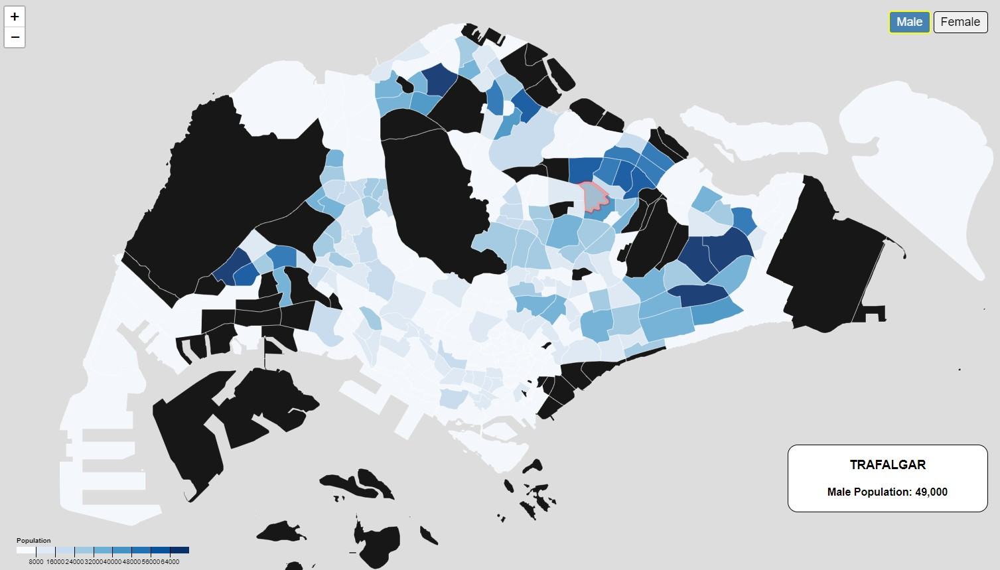

Assignment 4
Singapore population choropleth
Setup
To be completed before 11-4-2022(Thurs) 1200hrs
- This repo link will be of the format https://<username>.github.io/HASS-assignment4
- In the forked repo create a basic index.html file, and make it visible on GitHub repo pages (it's under the settings tab, under GitHub pages).
- You can put your CSS style tags, HTML and JS script code into one file, or organize them into files/directories.
What: Dataset
- We'll be looking at the Singstat Population Geospatial Timeseries.
- We'll also be looking at the Data.gov Master Plan 2019 Subzone Boundary.
- There is going to be a lot of data manipulation and preperation. I'll walk through this in class.
Why: Task
A choropleth visualization shows off which subsdistricts have the most population in SG.
How: Encoding
The main visualization encoding has been chosen - a choropleth map.
However, feel free to add in a legend, a title and any interaction tooltips as you prefer.
I have gone through in class building a choropleth in D3, but you can build this in whatever platform you choose as long as the result is visible in your assignment repository.
For example, purely in Leaflet, ArcGIS, Mapbox, etc.
Template starter
I've given links to both the datasets used so you can feel free to take the data from there.
However, I've also cleaned the dataset on both the GeoJSON data and also the 2022 population data.
I've also included a simple template D3 starter.
You also might want to refer to this for help.
Questions?
Chi-Loong | V/R